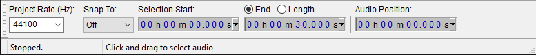

Status Bar
From Audacity Development Manual
Status Bar sections
There are three sections in the Status bar:
- the current status: Playing, Playing Paused, Scrubbing, Recording, Recording Paused or Stopped
- the central information and hints section
- the Actual Rate of the audio (the active sample rate, only shown when playing or recording).
When you hover over the audio area in any audio track, Status Bar displays "Click and drag to select audio". Dragging horizontally always selects a region of time. When you release the drag or otherwise hover over the left or right edge of a selection, the Status Bar message changes to advise that you can click and drag to move that selection boundary.
- 
Recording length
When recording, the audio data is written to your hard disk. For example, if you record without having yet saved a Project, the data is written to Audacity's temporary folder specified in Directories Preferences. Therefore, the amount of time you can record for is limited by the available disk space on the drive you are writing to. There are no other restrictions on recording length. As soon as you start your first recording in the current project window, the center section of the Status Bar gives a clear indication of how long you can record for, based on that remaining space:

The "Disk space remains" message will continue to display thereafter as soon as you leave the mouse stationary for a couple of seconds. If you run out of disk space at any time after starting or completing a recording, the default Status Bar message will change to "Out of disk space".
Reading files directly using On-Demand Loading
When reading imported uncompressed files files directly from the original files, the percentage of the waveform that has been computed is displayed in the center section of the Status Bar. When multiple files are being imported, the Status Bar will display the overall percentage of the multiple tracks that has been computed. To make the Status Bar display the percentage completion of a particular track, move the mouse over that track.
Other Status Bar center section displays
- When Scrubbing and Seeking you will messages relating to thos actions.
- When you hover over the sliders in Mixer Toolbar the Playback and Recording volumes are displayed in Status Bar.
- Many other buttons and tools in the Audacity window will display the name of the button or tool in Status Bar when you hover over the button or tool. Buttons in Transport Toolbar that display a Status Bar message include in parentheses the current keyboard shortcut for that button.
- When making a Spectral Selection, hovering over the edges or center line of a frequency selection also displays relevant help messages.
Actual Rate
While playback or recording is taking place (or is paused), or when monitoring, Actual Rate in the right-hand section of Status Bar shows the sample rate of that audio transport. "Actual Rate" when playing should be the rate communicated by Audacity to the soundcard. "Actual Rate" when recording is the rate communicated by the soundcard to Audacity.
When recording, the actual rate sent by the soundcard to Audacity can often differ from the chosen project rate, depending how the "Host" chosen in Device Toolbar handles the card's settings in the operating system. For an explanation of how this works on Windows Vista and later, see the sample rates section of the Windows 7 Wiki page. If the "Actual Rate" is different from the project rate then Audacity will resample from "Actual Rate" to the project rate.
Grab Handle
The small hatched triangular area at bottom right of the Status Bar indicates where you can drag with the mouse to resize the Audacity window up, down, left or right on any operating system.